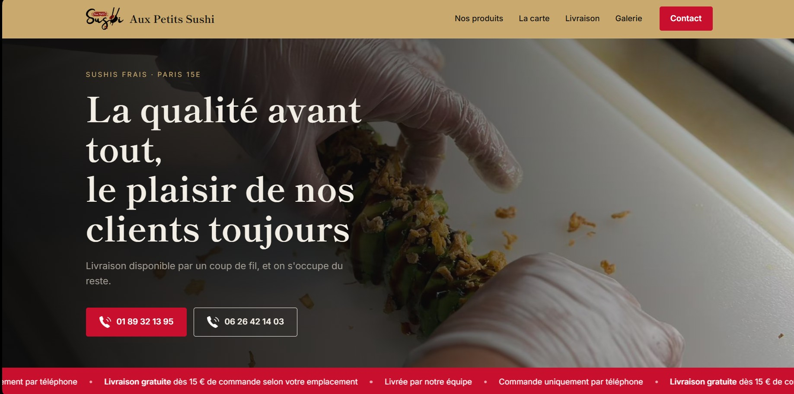
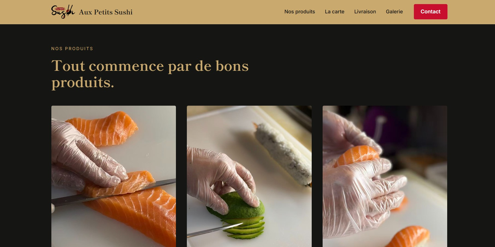
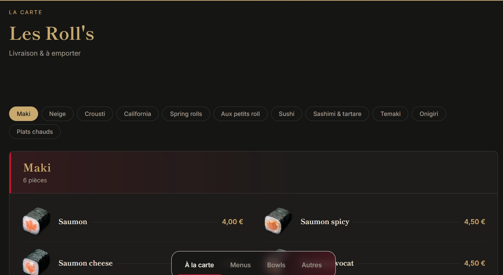
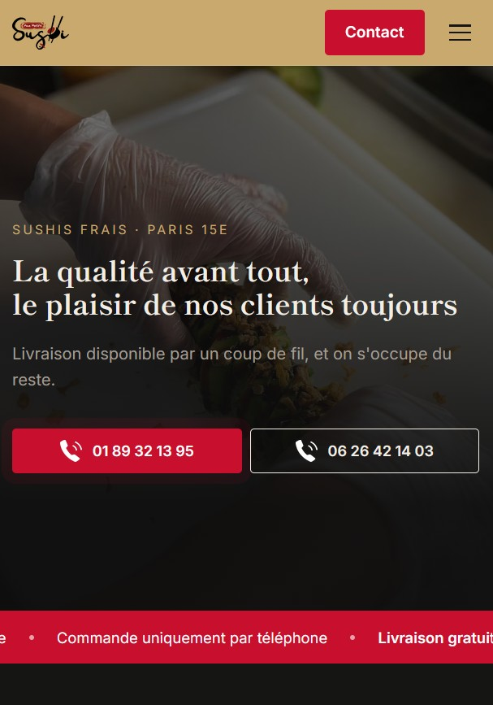

PROJETS · SITE VITRINE
Aux Petits Sushi
Le site d'un restaurant de sushis du 15e arrondissement de Paris, réalisé en binôme. Projet terminé et en ligne.
← Retour à tous les projets
MON RÔLE
Conception et développement du site, en binôme avec Jenny Cao.
OUTILS & TECHNIQUES
Figma · HTML · CSS · JavaScript · Responsive design
À PROPOS DU PROJET
Un site vitrine pour le restaurant Aux Petits Sushi, à Paris 15e. Notre objectif était de refaire et d'améliorer leur site : mettre en valeur les produits frais, rendre la carte facile à parcourir grâce à des onglets et des catégories (makis, california, bowls…), expliquer clairement la livraison et ses zones, et permettre d'appeler le restaurant en un clic depuis un téléphone. Le site s'adapte aussi bien à l'ordinateur qu'au mobile.
CRÉDITS
Site conçu et développé avec Jenny Cao · Photographies de Melissa Zhang



POUR ALLER PLUS LOIN
Explorer les autres projets ↗